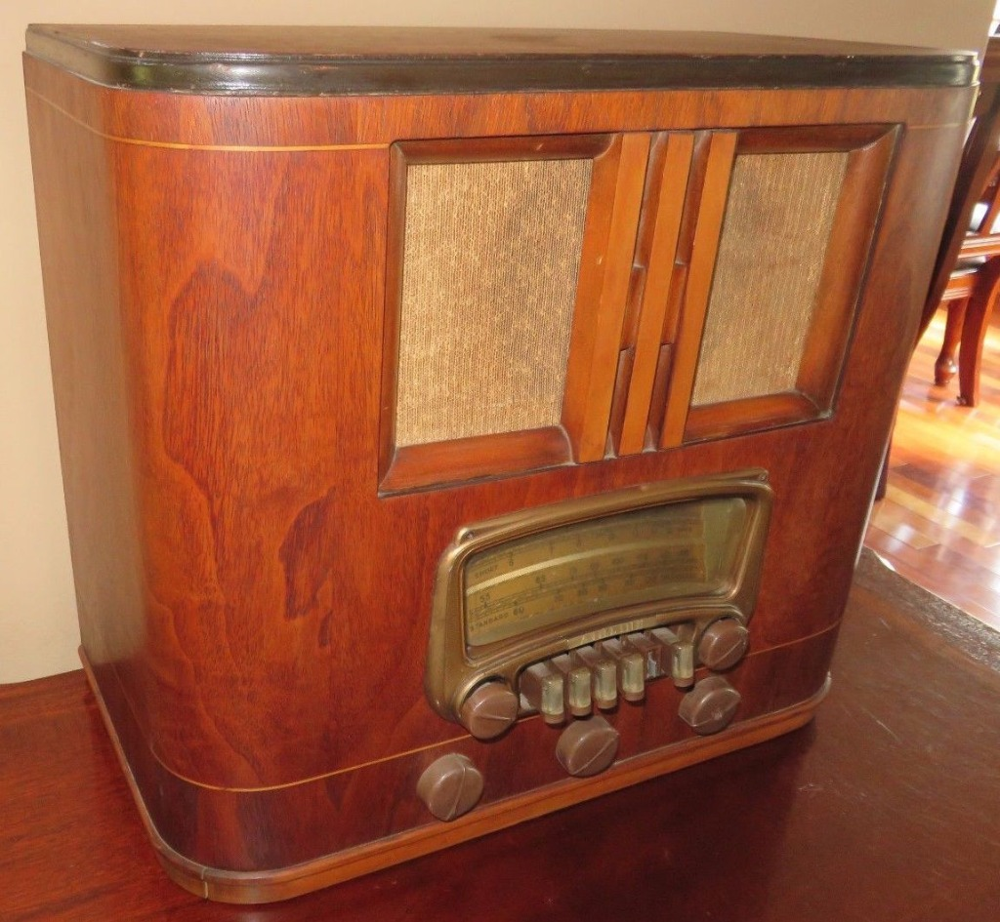
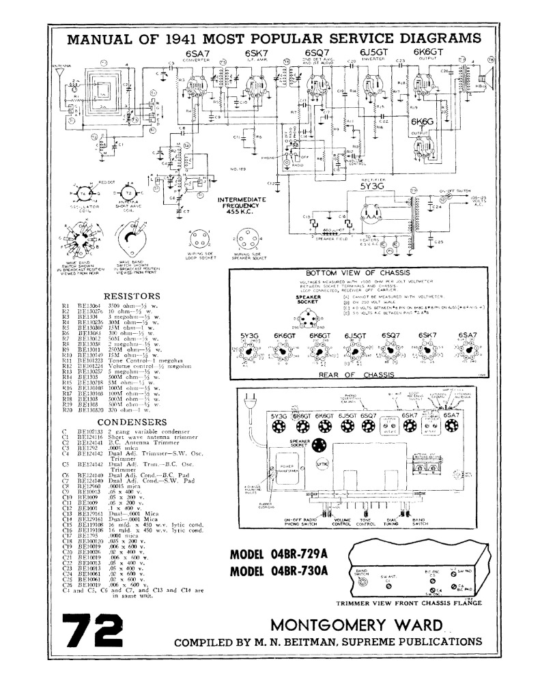

Airline
Radio Playback
Manage and stream audio through your Airline Radio
Network Info
Radio Stations
Loading streams...
Add Custom Audio Stream
Wi-Fi Settings
Configure network connection for your device
Connection Details
ActiveSearching...
IP: 127.0.0.1
Mode: Client
Available Wi-Fi Networks
Click "Scan" to look for nearby Wi-Fi networks.
About Airline Radio
Hardware architecture and project documentation
Historical Overview
The Montgomery Ward Airline Model 04BR-729A is an excellent slice of pre-war American consumer electronics history. Released for the 1941 model year, this table-top radio was sold through Montgomery Ward's massive mail-order catalog and retail stores under their proprietary Airline brand name.
Technical & Chassis Architecture
Underneath its walnut-veneered cabinet, the 04BR-729A utilizes a classic superheterodyne circuit configuration typical of high-quality tabletop receivers of the early 1940s.
Tube Lineup
It features a 7-tube complement (plus a rectifier), using standard Octal-base tubes. A typical Belmont 7-tube chassis from this specific run generally relies on the following stage configuration:
- RF Amplifier (6SK7): Improves selectivity and reduces image responses before mixing.
- Converter/Oscillator (6SA7): Frequency mixing and carrier wave generation.
- IF Amplifier (6SK7): Operating at a standard Intermediate Frequency of 455 kHz.
- Detector / AVC / 1st Audio (6SQ7): Demodulates the signal and drives audio pre-amplification.
- Audio Output (6V6G / 6V6GT): A classic, robust beam power tetrode capable of delivering clean, warm audio output to the dynamic speaker.
- Rectifier (5Y3G / 5Y3GT): Provides DC power conversion.
- Tuning Indicator (6U5 / 6G5): "Magic Eye" tube providing a glowing green visual indicator of signal strength.
Bands & Tuning Features
The radio is a multi-band receiver. It covers the standard Broadcast band (AM) alongside Shortwave bands, allowing users of the era to monitor international broadcasts—a highly popular feature as WWII intensified in Europe.
It includes permeability-tuned pushbuttons below the main dial scale for quick mechanical station selection, alongside continuous manual tuning. The dial face itself features a distinctive horizontal layout with a back-lit glass scale.
Belmont Radio Corporation (Manufacturer)
The Belmont Radio Corporation, founded in Chicago in 1925, was one of the United States' most prolific high-volume electronic contract manufacturers of the pre-war and post-war eras. Operating from the heart of Chicago's industrial hub—the global epicenter of radio production alongside industry giants like Zenith and Motorola—Belmont specialized in designing and engineering high-quality receivers for major private-label distributors. Their most significant partnership was with Montgomery Ward, for whom they manufactured thousands of "Airline" brand radios from the early 1930s until the mid-1950s. Known for their robust engineering and standard Octal-tube architectures, Belmont-made chassis were celebrated for their reliability and sensitivity. Following their pivotal war production years, Belmont transitioned to television manufacturing and was eventually acquired by Raytheon and later Admiral Corporation.
Modern Streamer Upgrade
To preserve this beautiful physical chassis while adapting it for modern listeners, we have integrated a headless network streamer (powered by a Raspberry Pi). The software configuration features:
- Low Resource Footprint: Built completely using Python's standard library for zero dependencies, guaranteeing it runs on older hardware (like Raspberry Pi 1, Zero, or 2).
- Headless Audio Playback: Utilizes
ffplaywith the-nodispflag to avoid window rendering over X11, optimizing CPU and memory usage. - Network Automation: Automatically monitors network health. If no Wi-Fi connection is active, the system configures a fallback Access Point hotspot using NetworkManager, enabling headless Wi-Fi configuration.
- State Persistence: Saves customized stations and automatically resumes the last-played stream on system boot.
Hardware Assembly & Schematic

Vintage Radio Cabinet
Authentic Montgomery Ward wood cabinet housing the modern streamer hardware.

Montgomery Ward Manual
Original 1941 radio receiver wiring diagram and mechanical layout blueprint details.